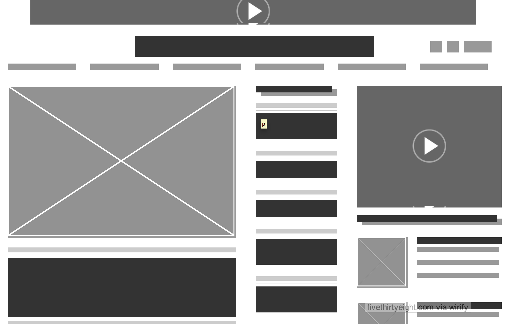
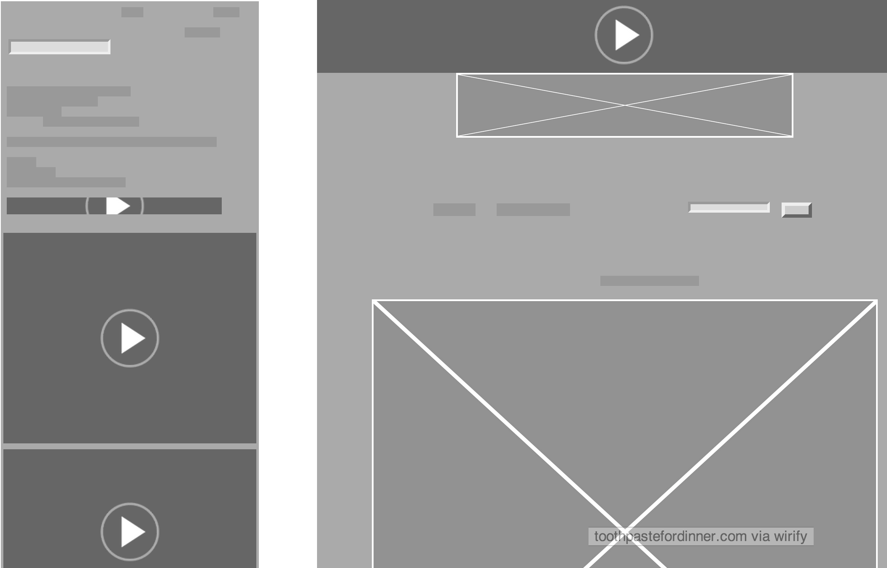
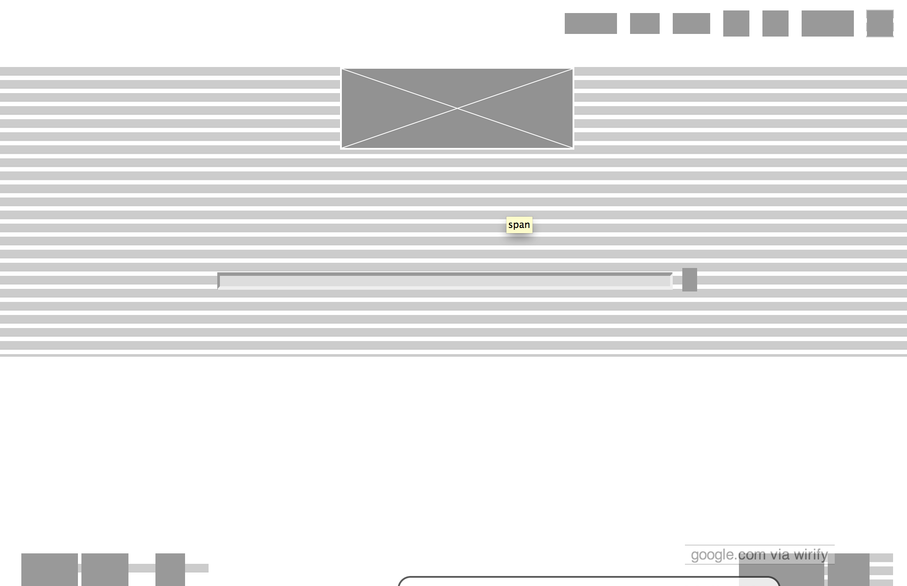

Five Thirty Eight provides articles about sports, politics, and pop culture with an emphasis on using statistical data to reinforce their ideas or disprove conventional wisdom. They do a good job of keeping their content on the forefront despite only receiving revenue from ad space. The layout does not feel cluttered or overcrowded and navigation and spotting new content is simple and user friendly.
Toothpaste For Dinner is a daily webcomic that gets revenue from advertising. The ad space is kept seperate from the content but is can still be distracting from the comics.
Google does a great job of keeping the design clean and simple despite having a lot of services to offer from their homepage. They've accomplished this by having their services hidden within the buttons in the top right.
